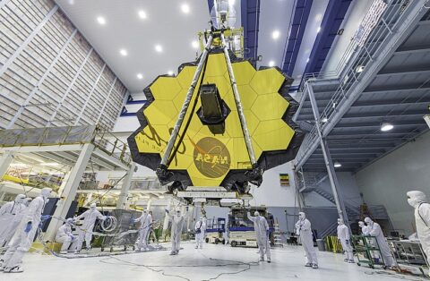

New
고르고놉시아 두개골 속 ‘이빨’ 논란
고르고놉시아 두개골 속에서 이빨이 뒤늦게 발견되면서 이 동물의 사회성, 검치의 존재 등을 놓고 논란이 예고된다.
뒤늦게 두개골 뼛속에 이빨이 박혀 있는 것을 발견한 연구팀은 정밀 분석에 들어갔다.
연구를 이끈 줄리안 베노이트(Julien Benoit) 교수는 “고르고놉시아가 자연을 지배하던 상황에서 감히 누가 고르고놉시아를 공격하겠냐?”며,
“또 다른 경쟁자 안테오사우루스가 공격했을 가능성은 있지만 안테오사우루스의 이빨이 고르고놉시아의 두개골을 뚫고 들어갈 수 없다.
Travel . Events
June 24, 2020
36 comments
by Admin Nat
New
양자혁명 2.0 시대의 예고 : 양자기술과 양자컴퓨터
RAPA Times
Creative . Design . Business
June 16, 2020
48 comments
by Admin Sam
생명의 기원 실험, 밀러가 간과한 것이 있다?
밀러‧유리 실험, 생명 기원을 재현한 획기적 사건밀러‧유리 실험은 초기 지구를 재현한 최초의 실험이다.
플라스크 소재인 이산화규소가 유리‧밀러 실험에서 발생한 다양한 유기화합물 생성과 관련해 어떤 역할을 하는지 궁금했다.
붕규산 플라스크는 밀러가 당시 실험한 것과 같은 유형이다.
Music . Audio
June 11, 2020
24 comments
by John Walker
110년 만에 새로운 ‘초전도 현상’ 밝혀낼까
이처럼 전기 저항이 0이 되는 것을 초전도 현상이라 한다.따라서 초전도성은 금속의 전자가 쌍을 이루어 저항 없이 물질을 통과할 때 발생한다.
처음에는 실수거나 측정 오류로 의심해그런데 전자쌍만이 초전도에 역할을 하는 것이 아니라 전자 4개가 모여서 새로운 물질 상태를 만들고 새로운 형태의 초전도성을 만들 수 있다는 사실이 밝혀졌다.
Artworks . Design
June 4, 2020
72 comments
by Admin Sam
밀렵을 피하려 상아를 잃어가는 코끼리들
특히, 상아가 없는 코끼리들의 빈도가 높아진 것이 암컷들에게서만 관찰되었는데, 연구진은 이것이 성염색체 X를 통해 관련된 유전적 변이가 대물림되었기 때문일 것으로 가정했다.
상아가 없는 코끼리들은 희귀 변이(X-)를 가진 암컷(X+X-)들일 것이었다.
이 결과들을 바탕으로 연구진은 모잠비크의 내전 동안 행해진 코끼리 밀렵이 선택압으로 작용해 암컷 코끼리들 사이에 상아 없는 개체들의 빈도를 높였다고 결론을 내렸다.
Text #999 Line #CCC Next #0CC Prev #F0F0F0
Creative . Video . Audio
May 31, 2020
84 comments
by Admin Sam

외계 생명체 찾는 새 우주망원경 필요해
생명체가 존재하는 외계행성을 탐색하기 위해서는 허블망원경보다 2.5배 더 큰 새로운 우주망원경을 만들어야 한다는 보고서가 발간됐다.
25개 외계행성 대기에서 생체 특징 탐색이번에 제안된 IR/O/UV 우주망원경의 목표는 NASA가 2016년부터 개발해온 ‘LUVOIR’과 ‘HabEx’과 대체로 유사하다.
보고서에서 제안된 새 우주망원경은 생명체가 존재할 수 있는 약 25개의 외계행성 대기에서 생체적 특징을 탐색할 수 있다.
Visual . Artworks
June 16, 2020
96 comments
by Admin Sam